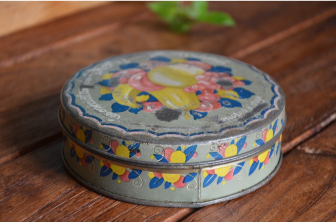

Créations sensibles, utiles et éthiques
L’histoire.
L’histoire de l’art, des objets, des choses, celle qu’on raconte à nos enfants, notre histoire.
Dans la mienne, il y a eu une mémé, mère de ma mère, qui m’a beaucoup marquée.
Une mémé dont la peau sentait le savon de Marseille, qui me rinçait les cheveux avec du vinaigre et de l’œuf et qui me faisait des croque-monsieur au chocolat noir.
Une mémé du Nord, dans une maison en brique. Rouille. Une mémé qui portait toujours un chignon. Une mémé qui avait peu de moyens et qui nous a appris à acheter peu mais mieux.


Une mémé qui croyait en nous, avec son sourire bienveillant.
Une mémé dont j’ai gardé le souvenir d’une vieille boîte à bonbons rouillée, chargée d’émotions.
Ma nouvelle activité est l’occasion de transmettre ces valeurs de simplicité et d’attachement à l’objet, garantes de sa durabilité.
Au-delà de l’aspect sensible, mes créations se veulent les plus respectueuses de l’environnement possibles :
- Du point de vue du transport : pour l’approvisionnement des matières premières et les envois des pièces (réutilisation des contenants et emballages divers, achat d’emballages sans plastique)
- Du point de vue des matériaux utilisés : rationalisation de la consommation en eau, utilisation des terres les plus locales et attention particulière apportée à la composition des émaux
- Mon travail participe également au développement du zéro déchet, en proposant des contenants de types pots à cotons lavables, porte-savons et pots à vrac.